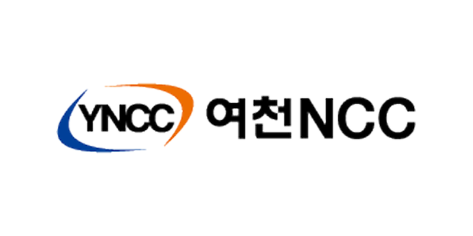
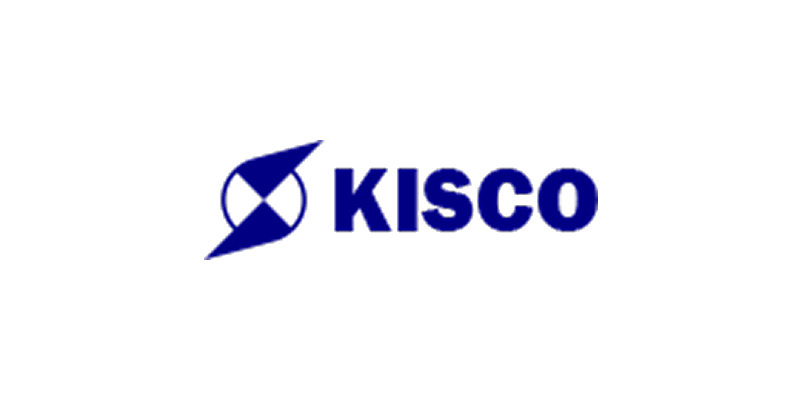

32건을 다 읽지 않아도 되도록, 역할과 판단이 분명한 세 건을 골랐습니다. 고객사 화면은 공개할 수 없어 직접 쓴 문서와 다시 그린 그림으로 보여드립니다. 각 사례는 상황, 한 일, 증거물을 같은 순서로 적었습니다.
01
DevPack 제품 UI 설계
역할
초기 구축 멤버 · UI 설계 (UI/CSS 층)
기간
2019.08 – 진행 중
대상
기업에 공급되는 사내 솔루션
상황
시스템관리 · 메뉴관리 · 코드관리 같은 공통 화면을 SI마다 처음부터 다시 만들고 있었습니다.
한 일
초기 구축 멤버로 PC · 태블릿 · 모바일 전 버전의 화면을 설계했습니다. 화면 유형별 템플릿 일곱 가지(Single Grid · Master Detail · Shuttle · Search Popup 등)와 정보 구성 원칙, 데이터 정렬 규칙을 가이드 54쪽으로 정했고, 테마 7종(화이트 · 블랙 · 블루 · 딥블루 · 라이트블랙 · 오렌지 · 쿼츠라이트)을 만들었습니다. 2025년부터 범정부 UI/UX 디자인 시스템(KRDS)을 반영했습니다.
결과
제가 참여한 넥사크로 외부 사업 14건이 모두 DevPack을 뼈대로 했고, 신규 프로젝트는 조립에서 시작합니다.
증거물
디자인 가이드 54쪽 · 제품 안의 컴포넌트 가이드 메뉴 · 테마 7종
02
모바일 원전건설사업관리 — 제안에서 수주까지
역할
UI 구조 제안서 작성 · 발표, 설계 총괄
기간
2025.07 – 2025.10
고객사
한전KDN
상황
모바일 화면 고도화 요청이 있었고, 화면 전체를 유동형(Fluid)으로 만들자는 안이 먼저 나와 있었습니다.
판단
유동형은 화면 수가 늘수록 설계와 유지보수 부담이 빠르게 커집니다. 국내는 쓰는 기기가 정해져 있어 그 부담을 질 이유가 없다고 보았습니다.
한 일
요청받지 않았지만 구조 제안서 20쪽을 직접 쓰고 발표했습니다. 고정형과 모듈형을 기본으로 하고, 기기가 정해지지 않은 해외 화면에만 유동형을 일부 쓰는 혼합 구조를 제안했습니다.
결과
제안이 발주처 최종 승인을 받아 실제 수주로 이어졌습니다.
증거물
UI 구조 제안서 20쪽 (2025.07) · 아래는 제안 내용을 다시 그린 것
세 가지 구조를 비교하고 섞어 쓰는 안을 냈습니다
고정형 (Fixed)구현이 빠르고 안정적. 공수를 예측하기 쉬움
모듈형 (MLM)부품 단위로 나눠 재사용. 유지보수가 쉬움
유동형 (Fluid)어떤 기기에도 대응. 화면이 많으면 공수 급증
국내 · 기기가 정해짐고정형 + 모듈형
해외 · 기기 미정혼합형, 유동형은 일부만
03
UI 전환 자동화 — 수작업을 규칙으로
역할
운영 프로세스 설계, 활용 가이드 저술 (PL)
기간
2026.03 – 2026.06
대상
레거시 화면의 넥사크로 전환 공정
상황
레거시 UI 전환은 화면마다 같은 작업을 손으로 되풀이하는 공정이었습니다.
한 일
도구 다섯 개를 변환 두 단계와 보정 세 단계로 엮어 순서를 정했습니다. 단계마다 체크포인트와 주의 사항, 자주 나는 오류의 해결법을 가이드로 남겼습니다.
증거물
활용 가이드 93쪽 (v1.9, 2026.05) · 아래 공정도
변환 두 단계, 보정 세 단계
STEP 1X-Converter파일 변환
STEP 2테마 변환기기존 테마 옮기기
STEP 3Rule MappingCSS 조사와 매핑 룰
STEP 4SmartLayout자동 리사이징
STEP 5Re-Styler스타일 최종 보정
PRINCIPLES
검증된 표준에서 출발하고, 규칙은 문서로 남깁니다
이 사이트도 같은 기준으로 만들었습니다.
01
정부 표준을 고쳐 씁니다
범정부 UI/UX 디자인 시스템(KRDS)을 실무와 AI 도구가 바로 따를 수 있는 규칙 문서로 재구성했습니다. 회사 홈페이지와 이 사이트에 적용했습니다.
02
규칙은 문서로 관리합니다
2026년부터 프로젝트를 규칙 문서(md)로 관리하는 방식을 사내에 도입했습니다. 지금은 전 프로젝트의 기본 구성이고, 디자인 규칙 문서는 디자이너 3명이 참고합니다.
2019.08 – 현재 · 설계 · PL로 주도한 건을 앞에, 초기 UI 구현 건을 뒤에 두었습니다. 넥사크로로 수행한 외부 사업 14건은 모두 DevPack을 뼈대로 했습니다.
PL은 디자인·UI 파트를 이끈 역할을 뜻하며, 사업 전체 관리(PM)는 맡지 않았습니다.
32프로젝트24고객사15주도 수행
NO프로젝트역할비고
설계 · PL 주도
01이젠고DevPack — 사내 UI 표준 · 공통 프레임워크19.08 – 진행 중설계·PL초기 구축 멤버 · PC·태블릿·모바일 전 버전 화면 설계 · 디자인 가이드 54쪽 · 테마 7종 · KRDS 반영(2025~)
02이젠고통합 웹사이트 iezngo.com26.06 – 26.09설계·PLJSP→정적 전환 · 관리 콘솔 · 검색 색인 · 직접 배포·운영 · 외주 인프라 자체화(연 600만 절감)
03이젠고UI 컨버전 자동화 솔루션 5종26.03 – 26.06설계·PL운영 프로세스 설계 · 활용 가이드 93p(v1.9) 저술
04두산건설DOOIT 업무포탈 넥사크로 컨버전25.11 – 26.04설계·PL—
05한전KDN모바일 원전건설사업관리시스템 구축25.07 – 25.10설계·PLUI 구조 제안서 직접 작성·발표 → 실제 수주 연결
06우리금융F&I전산시스템 구축 — 메인 디자인 가이드25.04 – 25.07설계·PL메인 디자인 가이드 수립 · UI 구현 총괄
07atCenter비축농산물 전자입찰 PC/Mobile24.12 – 25.04설계·PL—
08금융감독원경영정보 시스템24.09 – 24.09설계·PL—
09이젠고DevPack SDI 모바일 패키지24.06 – 24.09설계·PLSDI 모바일 패키징 — 대외 공공 프로젝트 적용의 기반
10한수원통합 원전건설관리 / 업무포털 표준화23.10 – 23.12설계·PL4인 팀 리딩 · 디자인 가이드 표준화
11건원건축채용관리 시스템 모바일23.10 – 23.12설계·PL—
12한전KDN한수원 경영관리 ERP 고도화23.05 – 24.06설계·PL14개월 장기 PL · 4인 팀 리딩
13이마트24차세대 경영주 모바일 시스템23.02 – 23.05설계·PL현대카드 앱 벤치마킹 → XD 시안·발표 직접 수행
14숭실사이버대차세대 통합정보시스템22.08 – 22.12설계·PL사내 XD 도입 제안 · Photoshop 공정 대체
15이마트24관리손익 시스템22.07 – 22.07설계·PL—
UI 설계·구현17건 펼치기접기
16한화손해보험Agentic OCR 구축26.09 – 26.11프롬프트 개발AI 개발 파트
17국가과학기술인력개발원국가과학기술인력개발원 알파캠퍼스 AI챗봇 관리자26.05 – 26.07디자인 가이드 · UI 수정 지원 (보조)웹 디자인 스타일가이드 38쪽을 배포했고, 디자인 수정 요청 3건의 원인을 공용 컴포넌트 미적용으로 찾아 AI 코딩 도구로 선택 상자 17개를 통일했습니다.
18한국전력공사차세대 전력정보시스템 1단계 EP포털24.11 – 24.12디자인 단독 담당초기 조사부터 투입해 EP포털의 디자인 방향을 세웠고, 이후 후임 디자이너의 작업을 검토했습니다.
19농산물품질관리원DevPack · SDI 모바일 패키지 적용24.09 – 24.10UI 설계·구현—
20한양대학교교내정보시스템 넥사크로 전환22.02 – 22.07UI 설계·구현—
21한샘개발홈케어플랫폼 모바일22.01 – 22.02디자인·퍼블리싱 (본사 지원)넥사크로·DevPack 기반 모바일 화면의 디자인과 퍼블리싱을 본사에서 지원했습니다.
22새한신용정보채권추심 포털21.11 – 21.12UI 설계·구현—
23ICD안성 업무연동 포털사이트21.10 – 21.12UI 설계·구현—
24건원건축KIS Information System21.06 – 21.11UI 설계·구현기존 1,000여 화면 UI 수정(단독) · 22.04까지 유지보수·모바일 문의 대응 · 발주처 스카우트 최종 합격 후 잔류
25세메스과제관리 재개발·고도화, 로드맵 시스템21.03 – 21.11UI 구현—
26이젠고DevPack 모바일 디자인21.02 – 22.02UI 설계·구현—
27파인씨앤아이한수원 발전운영 포털20.08 – 20.10UI 구현—
28교원그룹교원크리에이티브 업무포털 구축, 시스템 표준화20.04 – 20.10UI 구현—
29한국철강입출고 관리 시스템19.11 – 20.01UI 구현—
30KTE통합포털 사이트19.09 – 19.10UI 구현—
31중부도시가스차세대 웹 · 웹표준 기반 구축19.08 – 20.02UI 구현웹표준 기반 구축 · 4계절 디자인 테마 전환 직접 수행
32여천NCC업무포털 넥사크로 컨버전19.08 – 19.08UI 구현경력 첫 프로젝트 — 컨버전으로 시작
VERIFY
이력 검증
24개 기업 32개 시스템. 설계 · PL로 주도한 건을 앞에, 초기 UI 구현 건을 뒤에 두었습니다.
발주처 스카우트 제안 1회(최종 승인 후 잔류) · 같은 발주처에서 이어 맡은 사업: 건원건축 2건, 한샘개발 3건
32프로젝트
24고객사
15PL 수행
이마트24
이마트24설계·PL
차세대 경영주 모바일 · 관리손익 시스템
한전KDN
한전KDN설계·PL
모바일 원전건설 · 경영관리 ERP 고도화
이젠고
이젠고설계·PL
DevPack · UI컨버전 자동화 · 통합 웹사이트
금융감독원
금융감독원설계·PL
경영정보 시스템
두산건설
두산건설설계·PL
DOOIT 업무포탈 넥사크로 컨버전
한국수력원자력
한국수력원자력설계·PL
통합 원전건설관리 · 업무포털 표준화 · 4인 리딩
우리금융에프앤아이
우리금융에프앤아이설계·PL
전산시스템 · 메인 디자인 가이드
atCenter
atCenter설계·PL
비축농산물 전자입찰 PC/Mobile
건원건축
건원건축설계·PL
채용관리 시스템 모바일(설계·PL) · KIS Information System(UI 설계·구현)
숭실사이버대학교
숭실사이버대학교설계·PL
차세대 통합정보시스템
한화손해보험
한화손해보험프롬프트 개발
Agentic OCR 구축 · AI 개발 파트
한국전력공사
한국전력공사디자인 단독 담당
차세대 전력정보시스템 1단계 EP포털
국가과학기술인력개발원
국가과학기술인력개발원디자인 지원(보조)
알파캠퍼스 AI챗봇 관리자 · 디자인 가이드 · UI 수정 지원
한양대학교
한양대학교UI 설계·구현
교내정보시스템 넥사크로 전환
한샘개발
한샘개발디자인·퍼블리싱
홈케어플랫폼 모바일 (본사 지원)
새한신용정보
새한신용정보UI 설계·구현
채권추심 포털
농산물품질관리원
농산물품질관리원UI 설계·구현
DevPack · SDI 모바일 패키지 적용
ICD
ICDUI 설계·구현
안성 업무연동 포털사이트
세메스
세메스UI 구현
과제관리 재개발·고도화, 로드맵 시스템 (삼성 계열)
교원그룹
교원그룹UI 구현
교원크리에이티브 업무포털 구축, 시스템 표준화

여천NCC
여천NCCUI 구현
업무포털 넥사크로 컨버전

한국철강
한국철강UI 구현
입출고 관리 시스템
중부도시가스
중부도시가스UI 구현
차세대 웹 · 웹표준 기반 구축
파인씨앤아이
파인씨앤아이UI 구현
한수원 발전운영 포털
KTE
KTEUI 구현
통합포털 사이트
SOLO BUILT
직접 만들고 운영하는 사이트
기획 · 화면 · 데이터 · 배포 · 운영까지 나눠 맡은 사람 없이 진행했습니다.
둘 다 지금 눌러보실 수 있습니다.
iezngo.com단독 구축 · 운영 중
기존 회사 사이트를 내리고 반응형으로 새로 구축했습니다. 회사 홈 · 제품소개 · 체험 페이지를 단일 도메인으로 통합하고, 문의 접수 · 블로그 게시 관리 콘솔과 검색 색인을 직접 만들었습니다. 배포와 운영도 직접 맡고 있습니다.